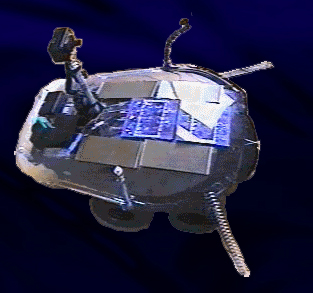

| 
Ab 17.45 wird zurückgefilmt!
eine Koopertation von NurSchrec und SHIFZ. |
.......................... AL-C
Der mobile Roboter AL-C ist über eine Internet-Homepage fernsteuerbar und sendet ein Live-Video seiner Umgebung zurück. Als Netz-Auge konzipiert, thematisiert Al den Begriff "wirklich" im Zeitalter der Tele-Information und der Wahrnehmung durch technische Avatare. Das Projekt beschäftigt sich ebenso mit möglichen Konsequenzen der Überwachungsgesellschaft und bietet im Rahmen des "großen Lauschangriffs von unten" die Möglichkeit, per Internet "zurückzufilmen". AL-C beschäftigt sich mit dem Umstand, daß seit dem Eintritt in das "elektronische Mittellalter" keine verbindliche Wirklichkeit mehr existiert. alles ist wahr bzw. falsch und unzählige paralellwirklichkeiten werden notwendig, um konflikte - die dadurch entstehen, daß defacto eine verbindliche wirklichkeit existiert, nämlich die des "alle leben auf dem selben planeten in letztlich "einer" zeit" - und deren auswirkung zu verdrängen oder zumindest aus dem sinn (außerhalb von wahr-nehmung) zu bekommen
more at www.shifz.org/al
|